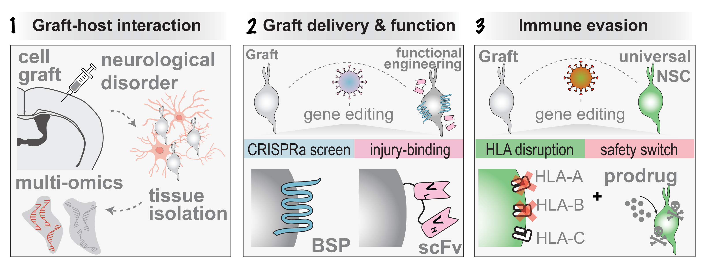

Cell Therapy for Brain Regeneration
Our lab develops next generation cell therapies to restore brain function. A central focus of our research is to use modern genetic, molecular and computational tools to overcome existing limitations in cell therapies for stroke and neurodegeneration.
Our main research goals are:
→
Decoding the molecular crosstalk between cell grafts and the stroke-injured tissue at single cell and spatial resolution
→
CRISPR screen for systemic delivery of gene-edited cell grafts to the stroke brain
→
Safe and immune evasive cell grafts for neurological disorders
→
Functionally engineered pericytes for Alzheimer's Disease

Stem cell therapy
Stroke biology
Single-cell RNA-seq
Neurovascular interactions
Translational neuroscience
CRISPR & gene editing
iPSC-derived neural stem cells
Blood–brain barrier
Spatial transcriptomics
Neural regeneration
Immune evasion
Neuroinflammation
Graft–host crosstalk
iPSC-derived pericytes
Bioluminescent imaging
Laser Doppler flowmetry
Bulk RNA-seq
CRISPRa screening
Deep learning gait analysis
Multi-omics profiling
CADASIL
Rodent stroke models
Confocal microscopy
Cell transplantation
Bioinformatics
Hydrogel delivery
HLA system editing